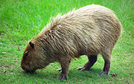

#წყლის გოჭი
#წყლის გოჭი, კაპიბარა (ლათ. Hydrochoerus hydrochaeris) — ძუძუმწოვარი ცხოველი მღრღნელების რიგისა. თანამედროვე მღრღნელებს შორის ყველაზე დიდი ზომისაა. მასიური სხეული აქვს. მისი სხეულის სიგრძე 1 მეტრზე მეტია, ხოლო მასა 50 კგ აღწევს. სიმაღლე მინდაოში 50-60 სმ. კუდი არ აქვს. დამახასიათებელია გრძელი კიდურები და ფართო ჩლიქისებური ბრჭყალები. მრავლდება წელიწადში ერთხელ. შობს 5-6 ნაშიერს. გავრცელებულია ცენტრალურ და სამხრეთ ამერიკაში. ბინადრობს ტროპიკულ ტყეებში მდინარეებისა და ტბების სანაპიროებზე. ცხოვრობს ხროვებად. კარგად ცურავს და ყვინთავს. იკვებება მცენარეულობით. ადგილ-ადგილ ზიანს აყენებს პლანტაციებს. ნადირობის ობიექტია. იყენებენ მის ხორცსა და ტყავს
# #
#კაპიბარაზე ინფორმაცია#